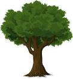

TREES


This page is to learn about position property in CSS.
Try to use ralative, absolute, sticky and fixed position property.
This page is to learn about position property in CSS.
Try to use ralative, absolute, sticky and fixed position property.
tree, woody plant that regularly renews its growth (perennial). Most plants classified as trees have a single self-supporting trunk containing woody tissues, and in most species the trunk produces secondary limbs, called branches. To many, the word tree evokes images of such ancient, powerful, and majestic structures as oaks and sequoias, the latter being among the most massive and longest-living organisms in the world. Although the majority of Earth’s terrestrial biomass is represented by trees, the fundamental importance of these seemingly ubiquitous plants for the very existence and diversity of life on Earth is perhaps not fully appreciated. The biosphere is dependent on the metabolism, death, and recycling of plants, especially trees. Their vast trunks and root systems store carbon dioxide, move water, and produce oxygen that is released into the atmosphere. The organic matter of the soil develops primarily from decayed leaves, twigs, branches, roots, and fallen trees, all of which recycle nitrogen, carbon, oxygen, and other important nutrients. There are few organisms as important as trees for maintaining Earth’s ecology.